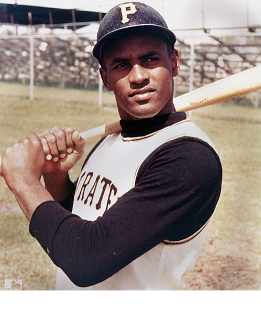

Roberto Clemente No. 21
Member of the Baseball Hall of Fame
Roberto Clemente was the first Latin American superstar in Major League Baseball. He was a legend in life and death, a baseball star, and a symbol of Latin American pride. The first Puerto Rican to achieve baseball stardom, Clemente worked hard at the game.
Accomplishments:
- Baseball player Roberto Clemente was born on August 18, 1934, in Carolina, Puerto Rico. The son of a sugarcane worker, Roberto Clemente began his professional baseball career just after finishing high school. He signed a deal with the Brooklyn Dodgers and played with their minor league team, the Montreal Royals, for a season. The next year he went to play for the Pittsburgh Pirates and made his major league debut in 1955.
- Clemente hit an impressive .311 in 1956, but he struggled with injuries and the language barrier early in his career. He hit his stride in 1960, batting .314 with 16 home runs and 94 RBIs to earn his first All-Star berth and help the Pirates win the World Series. The following year, he led the National League with a .351 average, slugged 23 homers and won his first of 12 consecutive Gold Glove Awards for fielding excellence.
- As the decade progressed, Clemente established himself as one of the top all-around players in baseball. He won three more batting titles, and twice led the league in hits. Furthermore, he boasted one of the most fearsome arms ever witnessed in the sport, consistently unleashing powerful throws from his post in right field. He enjoyed perhaps his finest season in 1966, batting .317 with a career-best 29 homers and 119 RBIs to win the NL Most Valuable Player Award.
- Clemente put on a show in the 1971 World Series, batting .414 with two home runs to help Pittsburgh defeat the favored Baltimore Orioles. Late in the 1972 season, he became the first Hispanic player to reach 3,000 career hits.